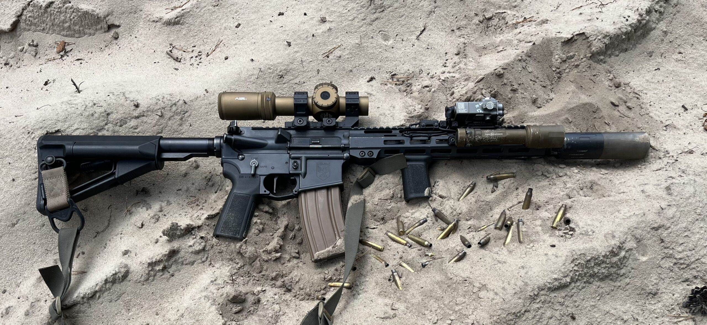
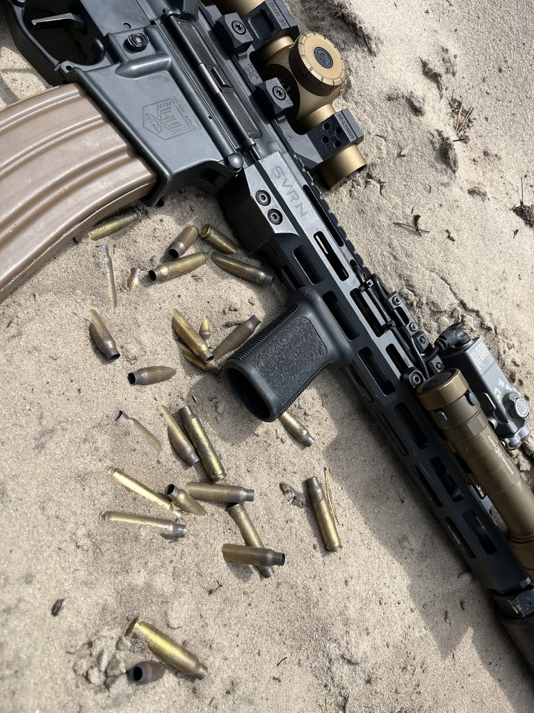
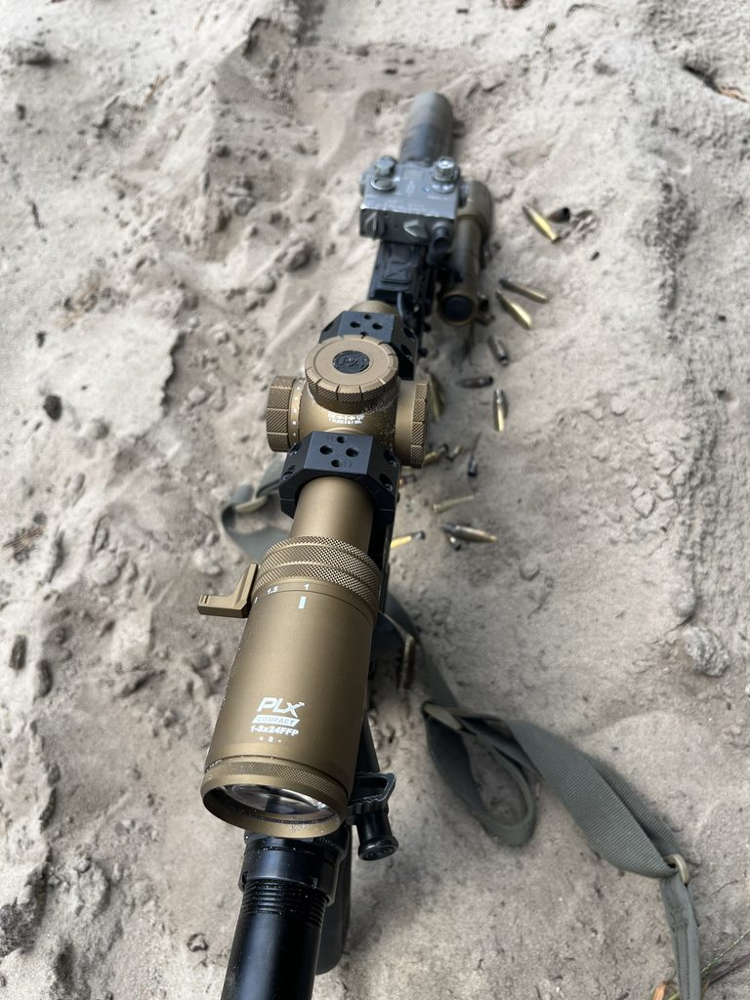
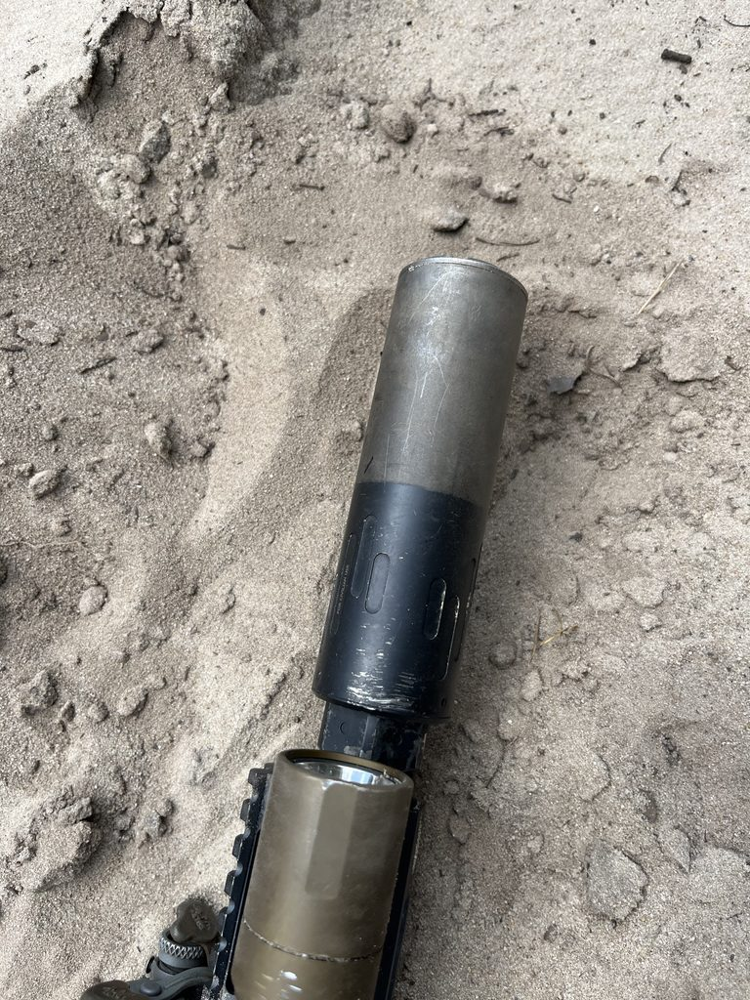
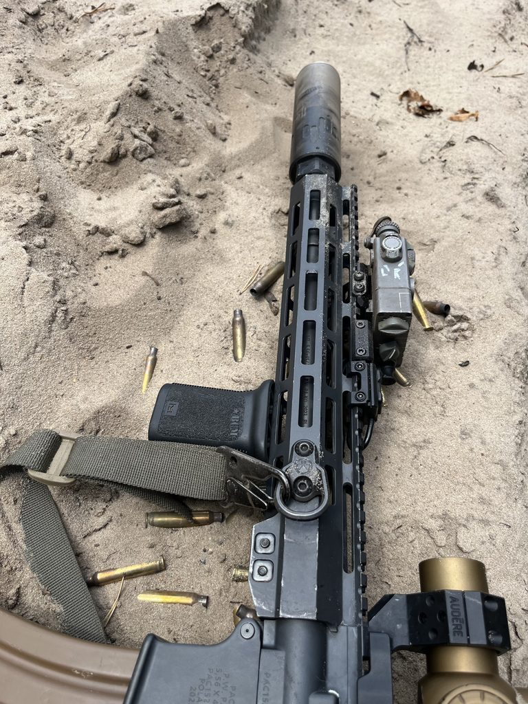
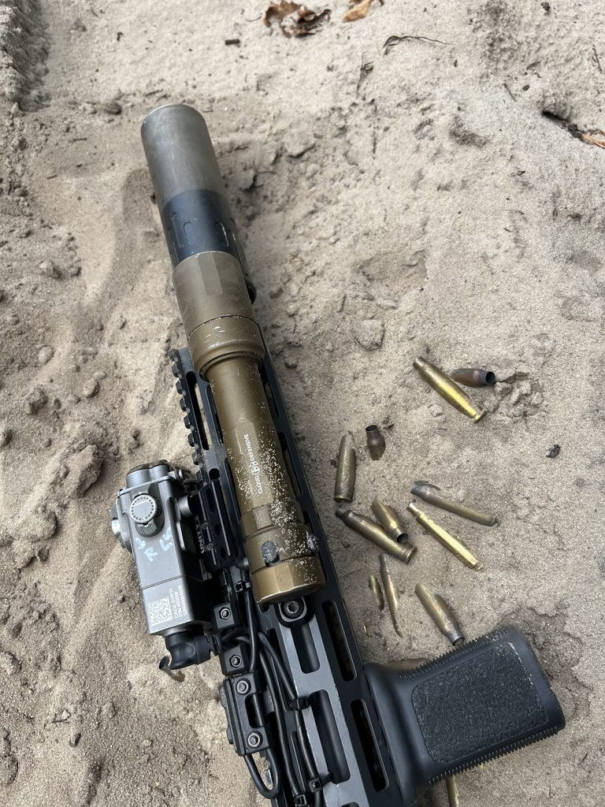
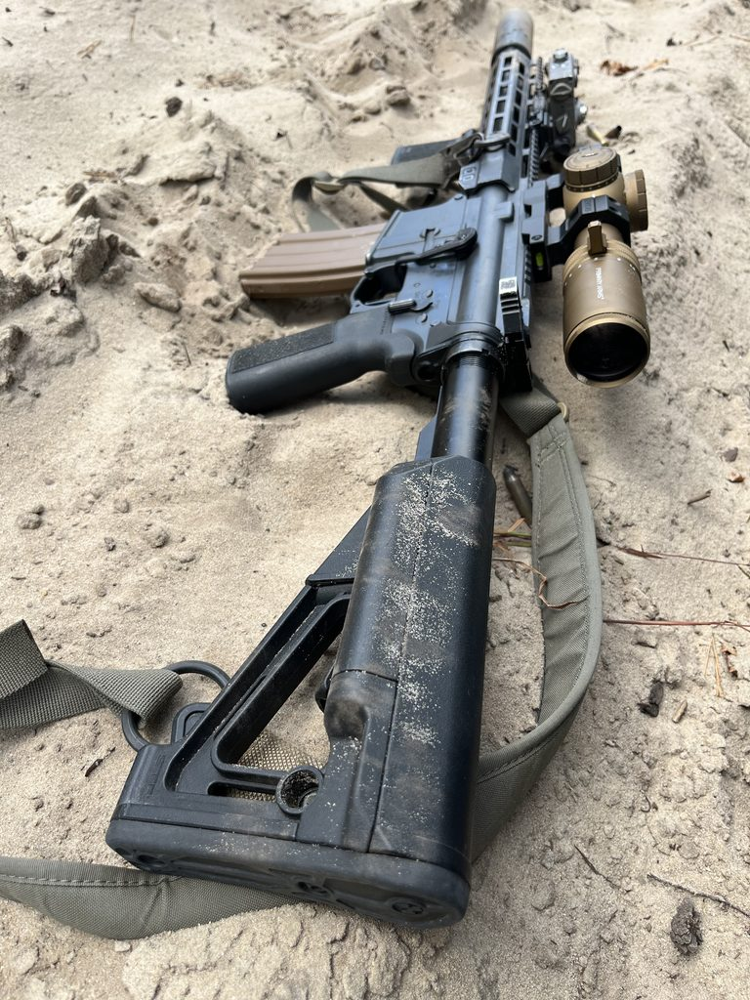
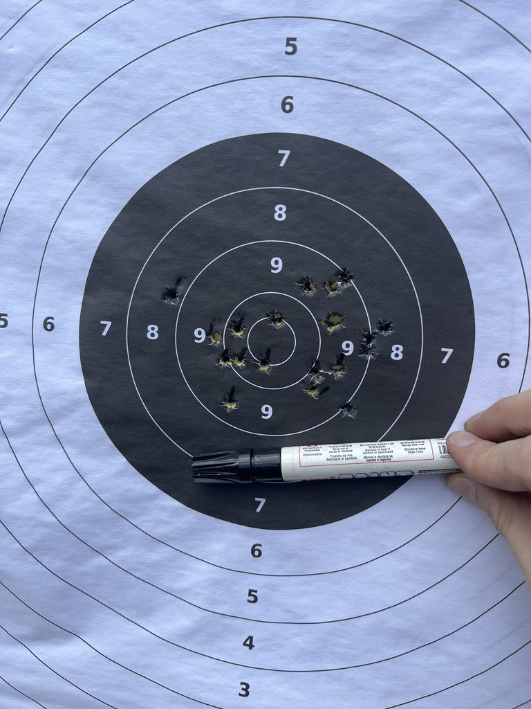

Karabin AR15 jak scyzoryk szwajcarski?
2026-09-03

Po przetarciu szlaku przez Brena kolegi, czas na bardziej sztampowy karabinek jakim będzie AR15. Ale zacznijmy od tego, jakie miałem wymagania od niego oraz co zaważyło, że padło na tę platformę.
Od jakiegoś czasu chodził mi po głowie karabinek „do wszystkiego”. Miał być na zawody o zacięciu taktycznym, gdzie miałem pewność że dostanie po bandzie straszliwie – na tych zawodach zawsze jakiś karabinek dogorywa żywota. Szkolenia, kursy i treningi z interesujących mnie zagadnień siłą rzeczy musiały się odbywać na tej platformie. Miał to być zestaw z którym będę miał szkolenia w nocy na noktowizji, z którym miałem się poruszać dziesiątki kilometrów z obciążeniem, o który nie będę specjalnie dbał ale który dalej będzie działał mimo tak złego traktowania – ot ewentualnie w chwili psiknąć olejem jeśli jest moment i tyle. Zestaw, którym będę strzelał zarówno w ciężkiej, opłytowanej w pełni kamizelce dynamicznie, jak i zgarniać gongi na odległości około 400-550 metrów. Miał być w miarę tani, bo w grę wchodziły modyfikacje, dodatki i więcej modyfikacji. Miał być takim moim strzeleckim scyzorykiem.
Platformę AR15 uważałem za naturalny wybór bo zwyczajnie mam innego aera, trochę gratów do niego, ponadto cały czas chciałem trzymać ten sam wypracowany manual i odruchy. Ja z tych, co lubią pogrzebać przy karabinku i dobierać osobno elementy kiedy mam na to ochotę.
Postawiłem na SVRN od PAC trzeciej generacji, długość lufy 12.6.

W porównaniu do poprzedniej generacji doszedł regulowany blok gazowy w standardzie a to było dla mnie ważne, żeby ludzi nie drażnić po nocy oraz na zawody. Dodatkowo producent polski, więc w razie czego łatwiej cokolwiek naprawić jakby nie grało, także cena podstawowa była zwyczajnie dobra za ten sprzęt. Nie wymagałem cudów w zestawie – docelowo chciałem prawie każdy element osobno kupować albo podbierać z posiadanych już przeze mnie części. Jakimś też wyznacznikiem był fakt, że trochę firm szkoleniowych jednak nie narzekało na niego. Z upływem czasu jedyny minus jaki ja zauważyłem to jest tak naprawdę łoże. Zwyczajnie jest niedopasowane idealnie do nakrętki lufy, ma jakby za dużą średnicę. Patentem na to jest jakaś cieniutka blaszka na nakrętce lufy aby wydłużyć obwód tejże nakrętki, na to łoże – skręcamy i gotowe. System gazowy mid-lenght wraz z regulowanym blokiem powoduje, że możemy zrobić karabinek który świetnie się prowadzi.

Optyka
Zestaw, który widzicie na zdjęciu tak naprawdę cały czas podlegał modyfikacjom – była założona Delta Hornet 1-6 (teraz poszła na inny karabinek testować na ile siatka BDC się pokrywa z rzeczywistością, skąd inąd ciekawa biegówka za te pieniądze), był założony UH-1 2 generacji, teraz zaś założyłem Primary Arms Plx 1-8 Compact z siatką ACSS Griffin – moim zdaniem bardzo uniwersalna siatka, chociaż nie ukrywam że najbardziej mi pasowała siatka od 1-10 Delty Stryker. Na korzyść PA przemówiła gwarancja, której w Delta mi bardzo brakuje. Montaż to Audere Levitas – ma wbudowaną libelkę oraz ma opcję zamontowania kropy dodatkowo jeśli miałbym taki kaprys. Jedyne co muszę obecnie zamontować to stare dobre Butler Creeks.

Tip of the spear
Urządzenie wylotowe – Silent Steel Compact Flow a gwizdek to Silent Steel 5-prong generacji drugiej. Bardzo dobra puszka w moim odczuciu – można ją rozebrać, wymienić każdy element osobno, podszlifować, podremelować (a to mi się zdarzało kilkukrotnie). Wsparcie ze strony Silent Steel jest doskonałe, oferują pomoc dla klienta na najwyższym poziomie, ponadto liczba rzeczy która jest dostępna na rynku dobrze nas zabezpiecza jeśli chcielibyśmy coś wymienić lub dokupić. Dość powiedzieć, że pierwsze czyszczenie tego tłumika było po przebiegu około 3-4 tysięcy. Wyczyściłem raczej z ciekawości co jest w środku a nie dlatego, że coś by się z nim działo odczuwalnie.

Wskaźnik – Steiner DBAL A2. Stan jego jest już mocno taki sobie, nie mniej zero trzyma a ma ze mną też nie łatwy żywot. Do wskaźnika dołożony modbutton. Bardzo lubię tę kostkę.

Latarka Cloud Defensive Rein 3.0. Bardzo ciekawa lampa na tle konkurencji. Wtedy na rynku nie było za bardzo latarki, która oprócz w lumeny to jednak szła w candele. Efekt? Spokojnie za dnia można świecić przez szybę zaciemnionego pomieszczenia z zewnątrz i widzieć każdy szczegół. Dodatkowo w zestawie mamy włącznik na szynę oprócz tego na „dupce”, a sama lampa działa na ogniwo 18650 lub dwa CR123. Reguluje się to sprytnym pierścieniem wewnątrz, aby bateria nam nie latała.
Reszta elementów ułatwiających życie
W prezencie od kolegi dostałem B.A.D lever, który od razu został zamontowany. Wspaniałe rozwiązanie, znacząco przyśpiesza wymianę magazynka i jest dużo wygodniejsze.
Spust to Triggertech Duty 5.5 funtowy single stage. Przy pewnych rzeczach warto mieć bezpieczny, wyrazisty spust. Mimo, że 5.5 funtów to jest tak naprawdę MILSPEC, to przez fakt jak przyjemnie działa zupełnie to nie przeszkadza. Z doświadczenia wiem, że TriggerTech zadziała w naprawdę kiepskich warunkach, gdzie komora jest cała zasyfiona. Dodatkowo montaż spustu jest banalny jak to w drop-in.

Kolba – fabryczna nie była najgorsza zresztą tak samo jak chwyt. Zwykła przyzwoita kolba, bodaj tureckiego pochodzenia. No – ale zmieniłem od razu bo zwyczajnie taki był plan. Na chwyt wleciało B5 System, a na kolbę – Magpul STR – dosyć wygodna, ma schowki w które pakuję CR123, iglicę zapasową i takie fanty. Raz miałem chyba upchane nawet jakieś żelki – zawsze to miła niespodzianka jak brakowało cukru!
Na pas wybrałem Maverick 2.0 od DTF. Jest rewelacyjny, szybko się ślizga, nie ma dziwnych klamerek ani wykańczania opalarką. Nie gryzie po szyi jak trzeba dłużej podziałać. W każdym karabinku mam clash hook z przodu oraz QD z tyłu.
Karabinek ma obecnie przelot nieco ponad 10000 kulek – wszystkie na tłumiku. Zostały wymienione tylko gas ringi, sam trzon zamka jest w bardzo dobrym stanie jak na swój przebieg. Zużycie zaczyna być powoli widać po otwierającej się grupie – nie jest to jeszcze dyskwalifikujący wynik, natomiast o ile fabrycznie był wybitnie celny nawet na lekkiej kulce mimo gwintu 1:7, to już widać że MOA się ciężej robi. Nie przeszkadza mi to przy takim przebiegu – aby trafiało w blachy na dystansie i będzie ok. W przyszłym roku jednak będę chciał zmienić lufę wraz z zamkiem – z pierwotnej wersji wtedy już zostanie bardzo niewiele, lecz na tym właśnie polega moc platformy AR15, że każdy element można w miarę łatwo dostać na rynku.

Podsumowanie:
Karabinek tego typu – w moim odczuciu z racji tego jak wiele funkcji ma pełnić – wymaga pewnego jednak zaangażowania już na etapie planowania. No bo spójrzmy na to: wymieniam sam spust na sportowego TriggerTech Diamond w two stage, zjeżdżam z regulacją na zero – i cały pomysł już się sypie. Wymieniam latarkę na taką „aby była” i spełniała swoją rolę tylko na krótkie dystanse – znowu pomysł legnie, jeśli chcemy identyfikować cel na dystansie, albo doświetlić za dnia coś będąc na zewnątrz wewnątrz budynku. Trzeba być dosyć świadomym tego, co robimy, co chcemy robić, trenować, jak się szkolić, czy jeździmy też za jakimiś manewrami żeby móc precyzyjnie poskładać sobie dany zestaw. Musimy pamiętać, że sprzęt który waży trochę, ma od groma różnych dodatków, w momencie kiedy nie będziemy go używać jest totalnie bezsensowny. Jedyne co zostanie uzyskane, to większa posucha w portfelu, oraz bardziej nabity lewy biceps. Dobierajmy sprzęt do celu i ambicji, a wszystko ponad ZAWSZE lepiej będzie przeznaczyć na szkolenia i treningi. Bo najważniejsi w całej tej układance tak naprawdę jesteśmy my.
Skrótowa lista elementów, które zostały dołożone:
- Silent Steel 5 prong gen. 2 – tłumik płomienia
- Silent Steel Compact Streamer – urządzenie wylotowe
- Cloud Defensive Rein 3.0 – latarka
- DBAL A2 + modbutton – wskaźnik / doświetlacz IR
- Unity Tactical – Fusion Micro Hub 2.0
- BCM Gunfighter – chwyt przedni
- Magpul M-LOK Paraclip Sling Mount – montaż na zawiesie
- Magpul B.A.D lever – zrzut zamka
- TriggerTech Duty 5.5 Single Stage Flat – spust
- Grip B5 System – chwyt
- Audere Levitas – montaż pod optykę
- Primary Arms PLX 1-8 Compact ACSS Griffin – optyka
- Magpul STR – kolba
- DTF Maverick 2.0 – zawiesie
Red. Nrk